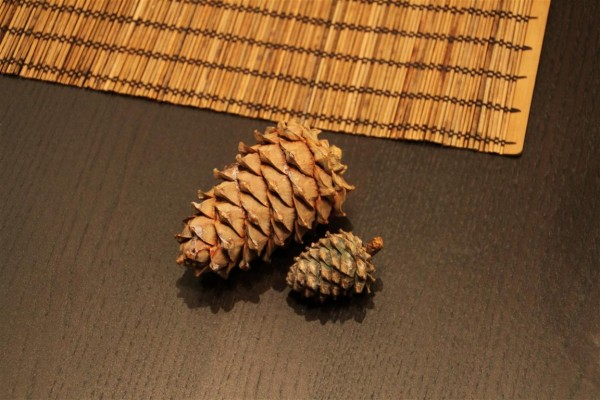
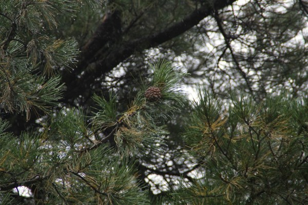
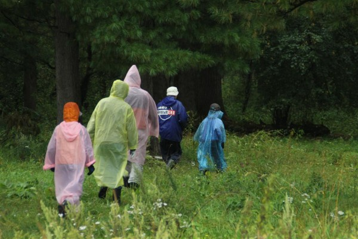
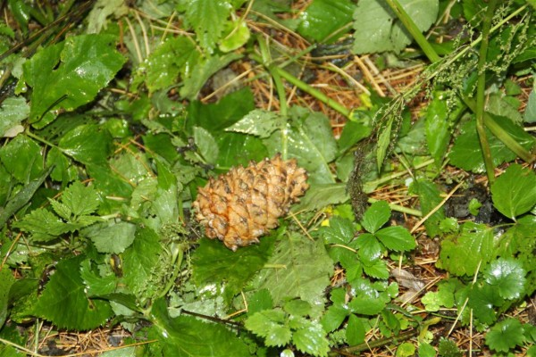
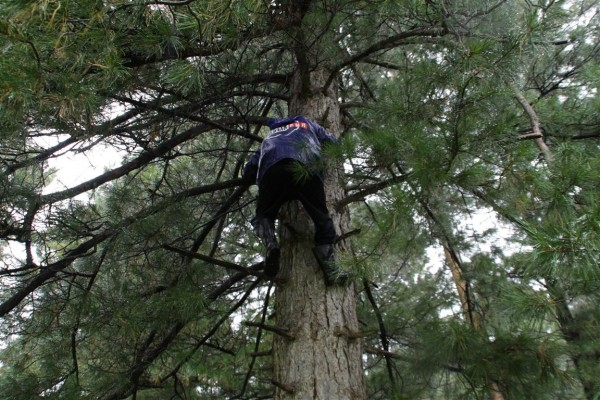
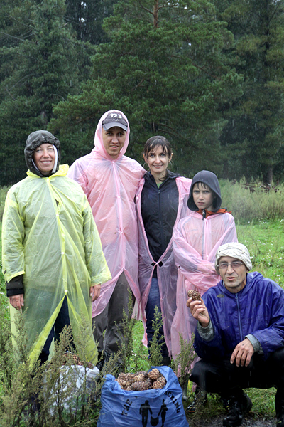

Несмотря на то, что сибиряк, да еще и из деревни, за шишками в лес не ездил ни разу. Позор, конечно, но среди знакомых не было никого, кто бы делал это регулярно и за кем за тридцать с лишним лет можно было бы хоть раз увязаться. Охотники, рыболовы, туристы, филателисты среди друзей есть, а шишкарей нету.
И вот этим летом Дмитрий Степанович Сагара, говорит, что мол тоже ездил за шишками первый раз только в прошлом году. Ты, спрашивает, ездил? Я рассказал всю правду. Ну вот, говорит, как соберусь, так обязательно тебя позову. Вчера собрался, и позвал.
Шишки в этом году много. «Пошла» она на месяц раньше. Урожай шишки не бывает два года подряд и зависит думаю очень от многого. Кстати, многие не знают, но кедровая шишка зреет два года. В первый год она выглядит примерно так.

А на следующий год уже будет выглядеть так.

С утра мы собрались в дорогу, а на небе ночью собрался дождь. Он смущал, но не помешал. Заехали в «Буревестник», купили гламурные дождевики (негламурных не было). Потом ехали-ехали и приехали. Запастись орехами на будущий год мы в лесу не собирались, поэтому взяв по пакету пошли по лесу заниматься собирательством.

Кедровую шишку добывают несколькими способами. Самый простой, конечно, собирательство. Идёшь по лесу, находишь под кедром шишку, кладешь в пакет. Те, кто занимается этим профессионально, по кедрам либо стучат толстыми палками, либо лазят и стучат ногой по веткам. Палкой по кедру, кедру больно, по-моему. А лазить по ним не располагала погода. Шел дождь, а мы шли по лесу в дождевиках.

Погуляли пару часов, набрали по пакету.
Непрекращающийся дождь смутил не всех. Дмитрий Степанович не смог пройти мимо двух кедров и, взобравшись на высоту метров 15, увеличил наш «урожай» еще на пакет.

Мокрые, но не зря мы вышли из леса.

Так как пакета шишек на долгую сибирскую зиму, конечно, не хватит, я проехался по деревне и купил еще два ведра орех. Теперь рассыпем орехи по дому, они будут сохнуть, а дома будет вкусно пахнуть.